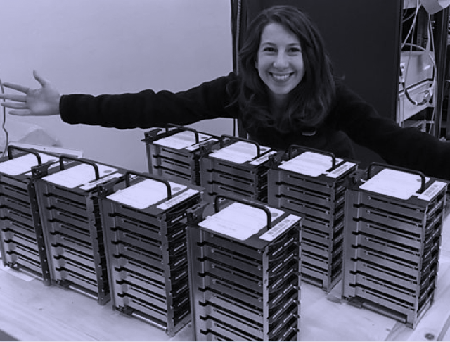
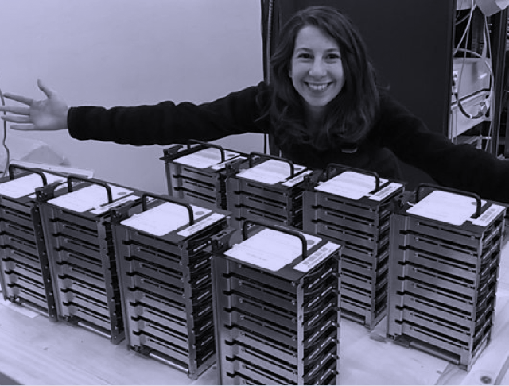

Our posturings, our imagined self-importance, the delusion that we have some privileged position in the universe, are challenged by this point of pale ligth.
Our planet is a lonely speck in the great enveloping cosmic dark. In our obscurity, in all this vastness, there is no hint that help will come from elsewhere to save us from ourselves.
 
